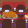

ERROR!
No more pages are available to be read.
The Shepherd Boy
Adapdation by Uns0gAUTHORS: Wilhelm and Jacob Grimm
ART AND ADAPTATION: Uns0g
whose fame spread far and wide because of the wise answers which he gave to every question.
The king of the country, known for being the wisest man who has ever owned a piece of land, heard the rumors about the sheperd boy's wisdom and did not believed in them.
The king sought for advice from the Council Of The Sages Of The Kingdom , and The Sages told him:
- Call the boy to come here to the palace and you will ask him to answer three question that only the wisest of the men could answer.
The advice was followed by the king and he sent word of the enquiry throughout the kingdom, an order that was quickly obeyed.
The boy heard about the royal enquiry and went to the castle to answer the royal's enquiry.
The shepherd boy barely arrived and the king was already saying: "If thou canst give me an answer to three questions which I will ask thee, I will look on thee as my own child, and thou shall dwell with me in my royal palace, because thou shalt be considered the wisest man who has ever owned a piece of land".
The boy said: "What are the three questions?" and the king aswered:
- The first question only the three Sages were able to answer, and the question is... "How many drops of water are there in the ocean?".
And the sheperd boy very wisely said:
- Many time ago the a man walked through Earth and was tortured to death, during his torture he wanted to run but he couldn't, because only blood was coming out of his legs, he wanted to release the weight but he couldn't, because only blood was coming out of his back, he wanted to cry but he couldn't, because only blood was coming out of his eyes. Count the tears he never cried and you can know how many drops of water there are in the ocean.
The king , impressed by the boy's answer, asked defiantly:
- If you are wise as it's said answer me the second question, that only one of the three Sages was able to answer, and the question is... "How many stars are there in the sky?"
And the sheperd boy very wisely said:
- Many time ago men lived above the skies and walked on clouds, our lives - because they are our ancestors - were better than anything you can imagine here on Earth.
Men lived like birds free to explore the skies from above it. But one thing bothered men, the light that emanated from the sky.
To stop the light from above the skies, men rebel against light  and hid themselves
in the clouds, placing them around their bodies.
and hid themselves
in the clouds, placing them around their bodies.
However the attempt to stop the light was frustated because men's bodies got havier and the clouds were vanished from the skies, nothing could hold men in the skies anymore because they weighted a lot and they had no more ground to step on... slowly everything began to crumble .
Men fell from the skies and their bodies turned into the ground we walk over today.
However the original place for men still are the skies above and every single time someone dies that person goes up into the skies and forms a bright spot we call star.
So if you count how many skeletons are under the ground you will know how many stars are over the skies.
The king , impressed by the boy's wisdom, asked defiantly:
- If you are wise as it's said answer me the third question, that none of the sages throughout history, were able to answer, and the question is... "How much is a second in eternity?".
And the shepherd boy very wisely said:
When men fell and formed the ground, many mountains were created from many different metals, one of them was made with raw diamond and it holds a woman inside.
What happens is that every century a little bird passes by looking for love and on one of its journeys he saw the woman trapped on the mountain of diamond.
Since the first time the bird saw her, it goes to the top of that mountain and takes out a diamond shard .
Count how long it will take for the bird to leave the mountain at ground level and you will know how much is a second in eternity.
- Impossible! - the king shouted - no bird could live that long.
And the shepherd boy very wisely said:
- And no love would live so short.
The king, very impressed by the boy's remarkable wisdom, said confidently:
- Thou hast answered the three questions like any other, and shalt henceforth dwell with me in my royal palace, and I will regard thee as my own child.
Addressing the people in the palace, the king said:
Let us have a feast  because we have been visited by the wisest man to ever own a piece of land.